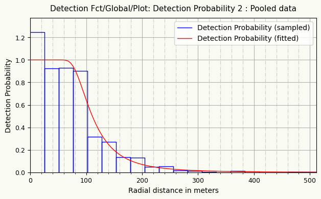
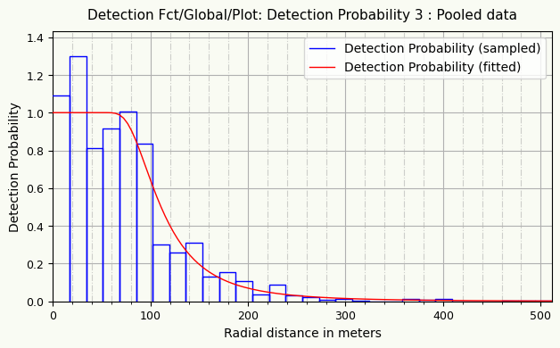
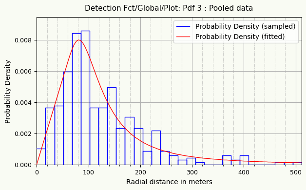

Results: main figures


Study type: Point transect, Radial distance, No clustering.
Units used: Meter for distances, Sq. Kilometer for areas.
Note: Most figures have been rounded for readability, but 'CoefVar Density' have been further modified : converted to %
| Echant | Espèce | Passage | Adulte | Durée | Mod Key Fn | Mod Adj Ser | ExCod | NObs | Max Dist | Effort | AIC | Chi2 P | KS P | CoefVar Density | Density | Min Density | Max Density | Number | Min Number | Max Number | EDR/ESW | Min EDR/ESW | Max EDR/ESW | PDetec | Min PDetec | Max PDetec | RunFolder | |
|---|---|---|---|---|---|---|---|---|---|---|---|---|---|---|---|---|---|---|---|---|---|---|---|---|---|---|---|---|
| 02 | 1 | Sylvia atricapilla | a+b | m | 10mn | HAZARD | COSINE | 2 | 403 | 511.41 | 190 | 4526.8 | 0 | 0.52 | 9.9 | 36.95 | 30.45 | 44.85 | 887 | 731 | 1076 | 135.2 | 126 | 144.9 | 0.07 | 0.061 | 0.08 | SylvAtri-ab-10mn-m-haz-cos-fx8uk14r |
Results: all details
Study type: Point transect, Radial distance, No clustering.
Units used: Meter for distances, Sq. Kilometer for areas.
Note: All values have been left untouched, as output by MCDS (no rounding, no conversion)
| Echant | Espèce | Passage | Adulte | Durée | Abrev. Echant | NTot Obs | Min Dist | Max Dist | Mod Key Fn | Mod Adj Ser | Mod Chc Crit | Conf Interv | ExCod | StartTime | ElapsedTime | RunFolder | NObs | NSamp | Effort | EncRate | CoefVar EncRate | Min EncRate | Max EncRate | DoF EncRate | Left Trunc | Right Trunc | Obs Rate | TotNum Pars | Delta AIC | AIC | Chi2 P | Chi2 P 1 | Chi2 P 2 | Chi2 P 3 | f/h(0) | CoefVar f/h(0) | Min f/h(0) | Max f/h(0) | DoF f/h(0) | PDetec | CoefVar PDetec | Min PDetec | Max PDetec | DoF PDetec | EDR/ESW | CoefVar EDR/ESW | Min EDR/ESW | Max EDR/ESW | DoF EDR/ESW | AICc | BIC | LogLhood | KS P | CvM Uw P | CvM Cw P | Key Fn | Adj Ser | NumPars KeyFn | NumPars AdjSer | Num Covars | EstA(1) | EstA(2) | DensClu | CoefVar DensClu | Min DensClu | Max DensClu | DoF DensClu | Density | Delta CoefVar Density | CoefVar Density | Min Density | Max Density | DoF Density | Number | CoefVar Number | Min Number | Max Number | DoF Number | Qual Bal 1 | Qual Bal 2 | Qual Bal 3 | Qual Chi2+ | Qual KS+ | Qual DCv+ | |
|---|---|---|---|---|---|---|---|---|---|---|---|---|---|---|---|---|---|---|---|---|---|---|---|---|---|---|---|---|---|---|---|---|---|---|---|---|---|---|---|---|---|---|---|---|---|---|---|---|---|---|---|---|---|---|---|---|---|---|---|---|---|---|---|---|---|---|---|---|---|---|---|---|---|---|---|---|---|---|---|---|---|---|---|---|---|
| 02 | 1 | Sylvia atricapilla | a+b | m | 10mn | SylvAtri-ab-10mn-m | 403.000000 | 1.212094 | 511.409745 | HAZARD | COSINE | AIC | 95 | 2 | 2023-04-16 18:55:41.035026 | 0.507002 | SylvAtri-ab-10mn-m-haz-cos-fx8uk14r | 403.000000 | 96.000000 | 190.000000 | 2.121053 | 0.068384 | 1.852082 | 2.429085 | 95.000000 | 0.000000 | 511.409800 | 100.000000 | 2.000000 | 0.000000 | 4526.764000 | 0.002468 | 0.163355 | 0.005630 | 0.002468 | 0.000109 | 0.071058 | 0.000095 | 0.000126 | 401.000000 | 0.069854 | 0.071058 | 0.060758 | 0.080313 | 401.000000 | 135.165300 | 0.035529 | 126.049500 | 144.940400 | 401.000000 | 4526.793000 | 4534.762000 | -2261.382000 | 0.517396 | 0.600000 | 0.600000 | HAZARD | COSINE | 2.000000 | 0.000000 | 0.000000 | 100.793500 | 3.829198 | 36.954800 | 0.098619 | 30.451850 | 44.846450 | 321.971000 | 36.954800 | 0.000000 | 0.098619 | 30.451850 | 44.846450 | 321.971000 | 887.000000 | 0.098619 | 731.000000 | 1076.000000 | 321.971000 | 0.328074 | 0.350365 | 0.354705 | 0.204242 | 0.369900 | 0.393774 |
Summary computation log
This is mcds.exe version 6.2.0
Options;
Type=Point;
Distance=Radial /Measure='Meter';
Area /Units='Sq. Kilometer';
Object=Single;
SF=1;
Selection=Sequential;
Lookahead=1;
Maxterms=5;
Confidence=95;
print=Selection;
End;
Data /Structure=Flat;
Fields=STR_LABEL,STR_AREA,SMP_LABEL,SMP_EFFORT,DISTANCE;
Infile=pranlys\230416-180310\SylvAtri-ab-10mn-m-haz-cos-fx8uk14r\data.txt /NoEcho;
Data will be input from file - [...]MN-M-HAZ-COS-FX8UK14R\DATA.TXT
End;
Dataset has been stored.
Estimate;
Distance;
Density=All;
Encounter=All;
Detection=All;
Size=All;
Estimator /Key=HAZARD /Adjust=COSINE /Criterion=AIC;
Monotone=Strict;
Pick=AIC;
GOF;
Cluster /Bias=GXLOG;
VarN=Empirical;
End;
** Warning: Parameters are being constrained to obtain monotonicity. **
Detailed computation log
Estimation Options Listing
Parameter Estimation Specification
----------------------------------
Encounter rate for all data combined
Detection probability for all data combined
Density for all data combined
Distances:
----------
Analysis based on exact distances
Width: use largest measurement/last interval endpoint
Estimators:
-----------
Estimator 1
Key: Hazard Rate
Adjustments - Function : Cosines
- Term selection mode : Sequential
- Term selection criterion : Akaike Information Criterion (AIC)
- Distances scaled by : W (right truncation distance)
Estimator selection: Choose estimator with minimum AIC
Estimation functions: constrained to be nearly monotone non-increasing
Variances:
----------
Variance of n: Empirical estimate from sample
(design-derived estimator R2/P2)
Variance of f(0): MLE estimate
Goodness of fit:
----------------
Cut points chosen by program
Glossary of terms
-----------------
Data items:
n - number of observed objects (single or clusters of animals)
L - total length of transect line(s)
k - number of samples
K - point transect effort, typically K=k
T - length of time searched in cue counting
ER - encounter rate (n/L or n/K or n/T)
W - width of line transect or radius of point transect
x(i) - distance to i-th observation
s(i) - cluster size of i-th observation
r-p - probability for regression test
chi-p- probability for chi-square goodness-of-fit test
Parameters or functions of parameters:
m - number of parameters in the model
A(I) - i-th parameter in the estimated probability density function(pdf)
f(0) - 1/u = value of pdf at zero for line transects
u - W*p = ESW, effective detection area for line transects
h(0) - 2*PI/v
v - PI*W*W*p, is the effective detection area for point transects
p - probability of observing an object in defined area
ESW - for line transects, effective strip width = W*p
EDR - for point transects, effective detection radius = W*sqrt(p)
rho - for cue counts, the cue rate
DS - estimate of density of clusters
E(S) - estimate of expected value of cluster size
D - estimate of density of animals
N - estimate of number of animals in specified area
Detection Fct/Global/Model Fitting
Effort : 190.0000
# samples : 96
Width : 511.4098
# observations: 403
Model 1
Hazard Rate key, k(y) = 1 - Exp(-(y/A(1))**-A(2))
Results:
Convergence was achieved with 14 function evaluations.
Final Ln(likelihood) value = -2261.3819
Akaike information criterion = 4526.7637
Bayesian information criterion = 4534.7617
AICc = 4526.7935
Final parameter values: 100.79350 3.8291985
Model 2
Hazard Rate key, k(y) = 1 - Exp(-(y/A(1))**-A(2))
Cosine adjustments of order(s) : 2
Results:
Convergence was achieved with 6 function evaluations.
Final Ln(likelihood) value = -2261.3819
Akaike information criterion = 4528.7637
Bayesian information criterion = 4540.7607
AICc = 4528.8237
Final parameter values: 100.79353 3.8293413 0.24215909E-10
** Warning: Parameters are being constrained to obtain monotonicity. **
Likelihood ratio test between models 1 and 2
Likelihood ratio test value = 0.0000
Probability of a greater value = 0.997724
*** Model 1 selected over model 2 based on minimum AIC
Detection Fct/Global/Parameter Estimates
Effort : 190.0000
# samples : 96
Width : 511.4098
# observations: 403
Model
Hazard Rate key, k(y) = 1 - Exp(-(y/A(1))**-A(2))
Point Standard Percent Coef. 95 Percent
Parameter Estimate Error of Variation Confidence Interval
--------- ----------- ----------- -------------- ----------------------
A( 1) 100.8 5.191
A( 2) 3.829 0.2107
h(0) 0.10947E-03 0.77788E-05 7.11 0.95216E-04 0.12586E-03
p 0.69854E-01 0.49637E-02 7.11 0.60758E-01 0.80313E-01
EDR 135.17 4.8023 3.55 126.05 144.94
--------- ----------- ----------- -------------- ----------------------
Sampling Correlation of Estimated Parameters
A( 1) A( 2)
A( 1) 1.000 0.760
A( 2) 0.760 1.000
Detection Fct/Global/Plot: Qq-plot

Detection Fct/Global/K-S GOF Test
Kolmogorov-Smirnov test
-----------------------
D_n = 0.0407 p = 0.5174
Cramer-von Mises family tests
-----------------------------
W-sq (uniform weighting) = 0.1158 0.500 < p <= 0.600
Relevant critical values:
W-sq crit(alpha=0.600) = 0.0968
W-sq crit(alpha=0.500) = 0.1187
C-sq (cosine weighting) = 0.0654 0.500 < p <= 0.600
Relevant critical values:
C-sq crit(alpha=0.600) = 0.0622
C-sq crit(alpha=0.500) = 0.0769
Detection Fct/Global/Plot: Detection Probability 1

Detection Fct/Global/Plot: Pdf 1
Detection Fct/Global/Chi-sq GOF Test 1
Cell Cut Observed Expected Chi-square
i Points Values Values Values
-----------------------------------------------------------------
1 0.000 39.3 39 34.14 0.692
2 39.3 78.7 93 101.02 0.636
3 78.7 118. 109 111.40 0.052
4 118. 157. 64 63.59 0.003
5 157. 197. 42 34.17 1.794
6 197. 236. 27 19.89 2.545
7 236. 275. 10 12.51 0.504
8 275. 315. 5 8.38 1.361
9 315. 354. 1 5.89 4.057
10 354. 393. 6 4.30 0.672
11 393. 433. 4 3.24 0.178
12 433. 472. 1 2.50 0.904
13 472. 511. 2 1.98 0.000
-----------------------------------------------------------------
Total Chi-square value = 13.3971 Degrees of Freedom = 10.00
Probability of a greater chi-square value, P = 0.20231
The program has limited capability for pooling. The user should
judge the necessity for pooling and if necessary, do pooling by hand.
Goodness of Fit Testing with some Pooling
Cell Cut Observed Expected Chi-square
i Points Values Values Values
-----------------------------------------------------------------
1 0.000 39.3 39 34.14 0.692
2 39.3 78.7 93 101.02 0.636
3 78.7 118. 109 111.40 0.052
4 118. 157. 64 63.59 0.003
5 157. 197. 42 34.17 1.794
6 197. 236. 27 19.89 2.545
7 236. 275. 10 12.51 0.504
8 275. 315. 5 8.38 1.361
9 315. 354. 1 5.89 4.057
10 354. 393. 6 4.30 0.672
11 393. 433. 4 3.24 0.178
12 433. 511. 3 4.48 0.491
-----------------------------------------------------------------
Total Chi-square value = 12.9835 Degrees of Freedom = 9.00
Probability of a greater chi-square value, P = 0.16335
Detection Fct/Global/Plot: Detection Probability 2

Detection Fct/Global/Plot: Pdf 2
Detection Fct/Global/Chi-sq GOF Test 2
Cell Cut Observed Expected Chi-square
i Points Values Values Values
-----------------------------------------------------------------
1 0.000 25.6 18 14.42 0.886
2 25.6 51.1 40 43.27 0.248
3 51.1 76.7 67 71.16 0.243
4 76.7 102. 91 78.74 1.909
5 102. 128. 41 58.89 5.434
6 128. 153. 43 38.97 0.417
7 153. 179. 25 25.89 0.030
8 179. 205. 28 17.78 5.869
9 205. 230. 12 12.67 0.035
10 230. 256. 15 9.32 3.457
11 256. 281. 5 7.06 0.600
12 281. 307. 4 5.47 0.396
13 307. 332. 1 4.33 2.560
14 332. 358. 0 3.49 3.486
15 358. 384. 6 2.85 3.481
16 384. 409. 4 2.36 1.137
17 409. 435. 0 1.98 1.979
18 435. 460. 0 1.68 1.676
19 460. 486. 1 1.43 0.131
20 486. 511. 2 1.23 0.475
-----------------------------------------------------------------
Total Chi-square value = 34.4487 Degrees of Freedom = 17.00
Probability of a greater chi-square value, P = 0.00734
The program has limited capability for pooling. The user should
judge the necessity for pooling and if necessary, do pooling by hand.
Goodness of Fit Testing with some Pooling
Cell Cut Observed Expected Chi-square
i Points Values Values Values
-----------------------------------------------------------------
1 0.000 25.6 18 14.42 0.886
2 25.6 51.1 40 43.27 0.248
3 51.1 76.7 67 71.16 0.243
4 76.7 102. 91 78.74 1.909
5 102. 128. 41 58.89 5.434
6 128. 153. 43 38.97 0.417
7 153. 179. 25 25.89 0.030
8 179. 205. 28 17.78 5.869
9 205. 230. 12 12.67 0.035
10 230. 256. 15 9.32 3.457
11 256. 281. 5 7.06 0.600
12 281. 307. 4 5.47 0.396
13 307. 332. 1 4.33 2.560
14 332. 358. 0 3.49 3.486
15 358. 384. 6 2.85 3.481
16 384. 409. 4 2.36 1.137
17 409. 435. 0 1.98 1.979
18 435. 460. 0 1.68 1.676
19 460. 511. 3 2.67 0.042
-----------------------------------------------------------------
Total Chi-square value = 33.8849 Degrees of Freedom = 16.00
Probability of a greater chi-square value, P = 0.00563
Detection Fct/Global/Plot: Detection Probability 3

Detection Fct/Global/Plot: Pdf 3

Detection Fct/Global/Chi-sq GOF Test 3
Cell Cut Observed Expected Chi-square
i Points Values Values Values
-----------------------------------------------------------------
1 0.000 17.0 7 6.41 0.054
2 17.0 34.1 25 19.23 1.729
3 34.1 51.1 26 32.05 1.144
4 51.1 68.2 41 44.77 0.318
5 68.2 85.2 58 53.76 0.335
6 85.2 102. 59 51.37 1.132
7 102. 119. 25 41.80 6.751
8 119. 136. 25 31.94 1.509
9 136. 153. 34 24.12 4.048
10 153. 170. 16 18.36 0.303
11 170. 188. 21 14.18 3.280
12 188. 205. 16 11.14 2.125
13 205. 222. 6 8.89 0.937
14 222. 239. 15 7.20 8.460
15 239. 256. 6 5.91 0.001
16 256. 273. 4 4.91 0.168
17 273. 290. 2 4.12 1.093
18 290. 307. 3 3.50 0.071
19 307. 324. 1 2.99 1.326
20 324. 341. 0 2.58 2.581
21 341. 358. 0 2.24 2.242
22 358. 375. 4 1.96 2.121
23 375. 392. 2 1.72 0.044
24 392. 409. 4 1.53 4.012
25 409. 426. 0 1.36 1.357
26 426. 443. 0 1.21 1.212
27 443. 460. 0 1.09 1.087
28 460. 477. 1 0.98 0.000
29 477. 494. 1 0.88 0.015
30 494. 511. 1 0.80 0.048
-----------------------------------------------------------------
Total Chi-square value = 49.5032 Degrees of Freedom = 27.00
Probability of a greater chi-square value, P = 0.00519
The program has limited capability for pooling. The user should
judge the necessity for pooling and if necessary, do pooling by hand.
Goodness of Fit Testing with some Pooling
Cell Cut Observed Expected Chi-square
i Points Values Values Values
-----------------------------------------------------------------
1 0.000 17.0 7 6.41 0.054
2 17.0 34.1 25 19.23 1.729
3 34.1 51.1 26 32.05 1.144
4 51.1 68.2 41 44.77 0.318
5 68.2 85.2 58 53.76 0.335
6 85.2 102. 59 51.37 1.132
7 102. 119. 25 41.80 6.751
8 119. 136. 25 31.94 1.509
9 136. 153. 34 24.12 4.048
10 153. 170. 16 18.36 0.303
11 170. 188. 21 14.18 3.280
12 188. 205. 16 11.14 2.125
13 205. 222. 6 8.89 0.937
14 222. 239. 15 7.20 8.460
15 239. 256. 6 5.91 0.001
16 256. 273. 4 4.91 0.168
17 273. 290. 2 4.12 1.093
18 290. 307. 3 3.50 0.071
19 307. 324. 1 2.99 1.326
20 324. 341. 0 2.58 2.581
21 341. 358. 0 2.24 2.242
22 358. 375. 4 1.96 2.121
23 375. 392. 2 1.72 0.044
24 392. 409. 4 1.53 4.012
25 409. 426. 0 1.36 1.357
26 426. 443. 0 1.21 1.212
27 443. 460. 0 1.09 1.087
28 460. 511. 3 2.67 0.042
-----------------------------------------------------------------
Total Chi-square value = 49.4810 Degrees of Freedom = 25.00
Probability of a greater chi-square value, P = 0.00247
Density Estimates/Global
Effort : 190.0000
# samples : 96
Width : 511.4098
# observations: 403
Model 1
Hazard Rate key, k(y) = 1 - Exp(-(y/A(1))**-A(2))
Point Standard Percent Coef. 95% Percent
Parameter Estimate Error of Variation Confidence Interval
--------- ----------- ----------- -------------- ----------------------
D 36.955 3.6444 9.86 30.452 44.846
N 887.00 87.475 9.86 731.00 1076.0
--------- ----------- ----------- -------------- ----------------------
Measurement Units
---------------------------------
Density: Numbers/Sq. kilometers
EDR: meters
Component Percentages of Var(D)
-------------------------------
Detection probability : 51.9
Encounter rate : 48.1
Estimation Summary - Encounter rates
Estimate %CV df 95% Confidence Interval
------------------------------------------------------
n 403.00
k 96.000
K 190.00
n/K 2.1211 6.84 95.00 1.8521 2.4291
Left 0.0000
Width 511.41
Estimation Summary - Detection probability
Estimate %CV df 95% Confidence Interval
------------------------------------------------------
Hazard/Cosine
m 2.0000
LnL -2261.4
AIC 4526.8
AICc 4526.8
BIC 4534.8
Chi-p 0.24681E-02
h(0) 0.10947E-03 7.11 401.00 0.95216E-04 0.12586E-03
p 0.69854E-01 7.11 401.00 0.60758E-01 0.80313E-01
EDR 135.17 3.55 401.00 126.05 144.94
Estimation Summary - Density&Abundance
Estimate %CV df 95% Confidence Interval
------------------------------------------------------
Hazard/Cosine
D 36.955 9.86 321.97 30.452 44.846
N 887.00 9.86 321.97 731.00 1076.0